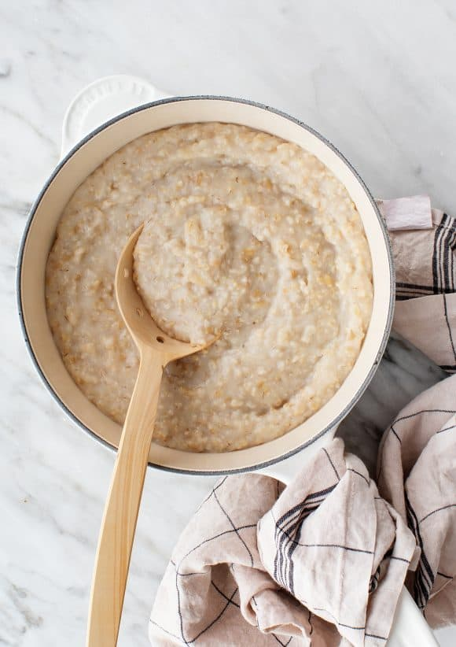

Porridge

Delicious and warm porridge for the coldest winter mornings!
Ingredients
- 1/2 cup quick cook oats
- 1 1/4 cups cold water and/ or Meadow Fresh Original Milk or cream
- 1/8 teaspoon salt - pinch (optional)
- Toppings: Chelsea Soft Brown Sugar, Chelsea Dark Cane Sugar or Chelsea Easy Pour Golden Syrup
Instructions
- Stovetop: In a saucepan, mix oats and water/Meadow Fresh Original Milk and pinch of salt and bring to the boil.
- Simmer for 3-5 minutes stirring often.
- Serve with Chelsea Soft Brown Sugar, Chelsea Dark Cane Sugar or Chelsea Golden Syrup and cold milk.